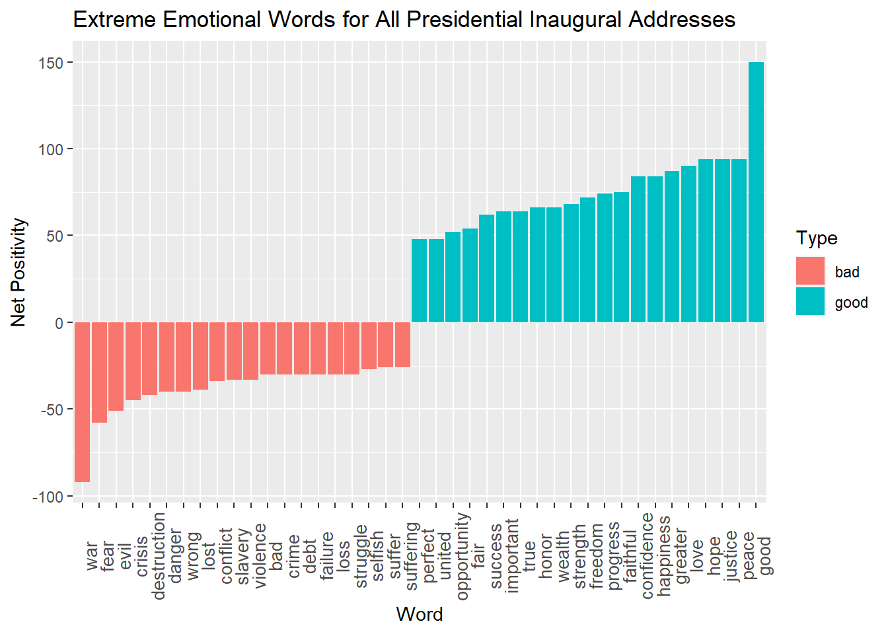
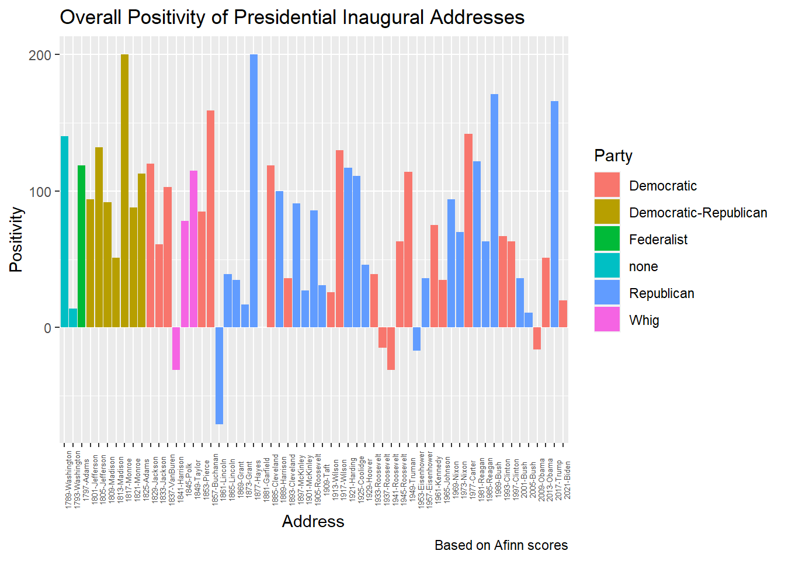

── Conflicts ────────────────────────────────────────── tidyverse_conflicts() ──
✖ dplyr::filter() masks stats::filter()
✖ dplyr::lag() masks stats::lag()
ℹ Use the conflicted package (<http://conflicted.r-lib.org/>) to force all conflicts to become errors
Attaching package: 'rvest'
The following object is masked from 'package:readr':
guess_encoding
library(httr)library(tidytext)
Warning: package 'tidytext' was built under R version 4.3.3
The US Inaugural Corpus
US presidential inaugural speeches serve as pivotal moments for setting the national tone, articulating priorities, and establishing a unified camaraderie as the nation embarks into a new era. Beyond their ceremonial significance, these events can be seen as historical snapshots, capturing the promises, aspirations, and challenges of the U.S. during their respective periods. With these ideas in mind, let’s look at trends in the language used and how these speeches have changed over time or by party, and eventually, run sentimental analysis on their vocabulary choices and discover what insights this can bring.
Interestingly enough, there are nine speeches that don’t have a single named reference of “America” (or “american”, “americans”, etc.) within them.
Corpus consisting of 59 documents, showing 59 documents:
Text Types Tokens Sentences Year President FirstName
1801-Jefferson 717 1923 41 1801 Jefferson Thomas
1809-Madison 535 1261 21 1809 Madison James
1825-Adams 1003 3147 74 1825 Adams John Quincy
1829-Jackson 517 1208 25 1829 Jackson Andrew
1845-Polk 1334 5186 153 1845 Polk James Knox
1869-Grant 485 1229 40 1869 Grant Ulysses S.
1873-Grant 552 1472 43 1873 Grant Ulysses S.
1905-Roosevelt 404 1079 33 1905 Roosevelt Theodore
1913-Wilson 658 1882 68 1913 Wilson Woodrow
Party
Democratic-Republican
Democratic-Republican
Democratic-Republican
Democratic
Whig
Republican
Republican
Republican
Democratic
Many of these opt to use terms like “the Nation” or “this Republic”, finding substitutes in place of name-dropping their country. However, the most recent of these took place in 1913 with Wilson’s first inaugural address, which could suggest that this practice is outdated in the modern era. Still, the fact that these former presidents were able to make a rallying cry without naming their homeland is impressive, and seems like a difficult task made even more tricky.
Corpus consisting of 59 documents, showing 59 documents:
Text Types Tokens Sentences Year President FirstName Party
1797-Adams 826 2577 37 1797 Adams John Federalist
1933-Roosevelt 743 2057 85 1933 Roosevelt Franklin D. Democratic
1941-Roosevelt 526 1519 68 1941 Roosevelt Franklin D. Democratic
1961-Kennedy 566 1541 52 1961 Kennedy John F. Democratic
1981-Reagan 902 2780 129 1981 Reagan Ronald Republican
1997-Clinton 773 2436 111 1997 Clinton Bill Democratic
2009-Obama 938 2689 110 2009 Obama Barack Democratic
2017-Trump 582 1660 88 2017 Trump Donald J. Republican
2021-Biden 812 2766 216 2021 Biden Joseph R. Democratic
We can see that outside of one mention way back in 1797, terror is largely a modern adversity for the US. Especially so in the wake of September 11th, nearly every president in recent memory has mentioned it at least once within their speeches, surprisingly however, Bush did not.
[1] │ . If an election is to be determined by a majority of a single vote, and that can be procured by a party through artifice or corruption, the Government may be the choice of a party for its own ends, not of the nation for the national good. If that solitary suffrage can be obtained by foreign nations by flattery or menaces, by fraud or violence, by <terror>, intrigue, or venality, the Government may not be the choice of the American people, but of foreign nations. It may be foreign nations who govern us, and not we, the people, who govern ourselves; and candid men will acknowledge that in such cases choice would have little advantage to boast of over lot or chance.
Here we can see Adams’ reference to terror is more in line with the idea of a fearsome government like the “Reign of Terror” that had just occurred in France earlier that decade. While this is likely not how a modern president would use the word, it still feels topical given the issues nations were struggling to face at the time.
Sentiment Analysis
There are a variety of methods/tools we have access to for evaluating the feelings expressed by text, but two big lexicons we will be using are AFINN and nrc.
The AFINN lexicon contains words with various emotional charges and for each, has a score ranging between -5 and 5 with negative scores indicating negative sentiment and positive scores indicating positive sentiment.
The nrc sorts words into categories os positive, negative, anger, anticipation, disgust, fear, joy, sadness, surprise, and trust.
We can combine these lexicons into one large dataset, and peel off all the words with an emotional charge. Let’s also make a character vector where each entry is an inaugural address.
Now we have the tools ready to analyze our text. Let’s first look at all speeches overall and see what generalizations can be made for all addresses as a whole.
counts <-c()index <-1for (i in all_word){ counts[index] <-0for(j in inaug){if(str_detect(str_to_lower(j), paste0("\\b", i, "\\b"))){#need to use paste0 function to add borders on other side of variable, otherwise words like "assembly" would get flagged for containing "ass" counts[index] <- counts[index] +1 } }#print(counts[index]) index <- index +1#print(index)}
counts() is a vector containing the number of occurrences of each of the sentimental words we had in our record. Let’s add this into our dataset and calculate the total emotional value for all words over the course of every address.
topword <- nrc_full |>arrange(desc(net_value)) |>distinct(word, n, net_value) |>slice_max(net_value, n =20) |>mutate(positivity ="good")bottom_word <- nrc_full |>arrange(net_value) |>distinct(word, n, net_value) |>slice_min(net_value, n =20) |>mutate(positivity ="bad")extreme_word <-bind_rows(topword, bottom_word)
extreme_word |>mutate(word =fct_reorder(word, net_value)) |>ggplot(aes(word, net_value, fill = positivity)) +geom_col() +theme(axis.text.x =element_text(angle =90, size =10)) +labs(x ="Word", y ="Net Positivity", title ="Extreme Emotional Words for All Presidential Inaugural Addresses", fill ="Type")

After sorting, we see the word with the most profound positive effect when combining all our addresses is “good”, which may be an underwhelming choice, but it certainly makes sense that such a common word would make it to the top. Some more notable results have “hope”, “peace” and “justice” all tied for second place and “freedom” and “strength” not too far down from that. All of these highlight core, nationalistic values the US holds highly and provides a picture of what emotional impact the each president has wanted to convey as we usher in a new era of leadership.
On the other hand, these speeches can be a platform to address the threats looming over each presidential term and act as either a cautionary warning, or a denouncement of such beliefs.
We also can see that by far the most pervasive negative term in these addresses is “war” which is a surprisingly straightforward answer. The term has a very strong connection to the history of the US throughout all eras and is undeniably one of the largest challenges for the leadership of any nation. Another interesting thing to note is that slavery is 10th, and crime and debt are 13th and 14th. These fairly accurately reflect the most pressing issues the US has faced over the course of its entire history. However, although these negative keywords highlight the overall adversities experience by our nation, their presence may also serve to emphasize the resilience, determination, and resolve of Americans to overcome these obstacles.
Because of this, not all inaugural addresses are equal. Due to the historical contexts of the times, certain speeches may be more negative-sounding than others. The US has had 16 presidential addresses during times of war. Let’s highlight those 16 specifically, and see if they really do tend to have a more gloomy tone than the rest.
First, we’ll make a new data set that has a total sentimental value attached to each presidential address.
newcounts <-c()index <-1for(i in inaug){ newcounts[index] <-0for(j in all_word){if(str_detect(str_to_lower(i), paste0("\\b", j, "\\b"))){ newcounts[index] <- newcounts[index] + nrc_full$value[which(nrc_full$word == j)[1]] } }#print(newcounts[index]) index <- index +1#print(index)}
Warning: The `x` argument of `as_tibble.matrix()` must have unique column names if
`.name_repair` is omitted as of tibble 2.0.0.
ℹ Using compatibility `.name_repair`.
pres_nrc |>ggplot(aes(address, positivity, fill = Party)) +geom_col() +theme(axis.text.x =element_text(angle =90, size =5)) +labs(x ="Address", y ="Positivity", title ="Overall Positivity of Presidential Inaugural Addresses", caption ="Based on Afinn scores")

Plotting this information shows that, in general, presidential inaugural addresses tend to be more positive than negative. It acts as a time for inspiring the nation and instilling hope for the future. Even when acknowledging uncertainty, the speeches still commit to addressing these challenges effectively. All this makes the few net negative speeches all the more interesting with what insight they can share for the era in which they were delivered.
By far the most negative was Lincoln’s first address given in 1861, just around a month before the US entered its deadliest war to date. We can also see two of FDR’s speeches also sink to the bottom as most negative, one for 1937 and another following in 1941, which coincides with WWII, the second deadliest war for the nation.
One more interesting part to observe is that President Garfield’s speech had an end total of 0 on the positivity scale. This is largely due to how his speech praised how proud he was of his nation, but condemned any acts he saw as a threat to it (namely the impediment of African-American sufferage).